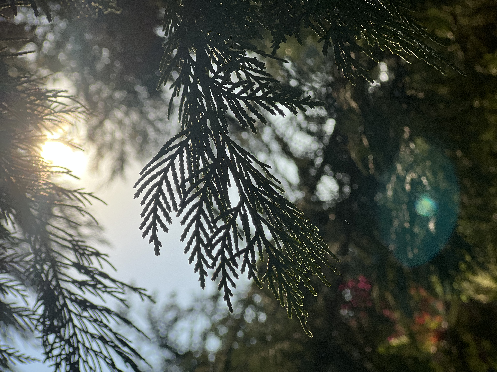
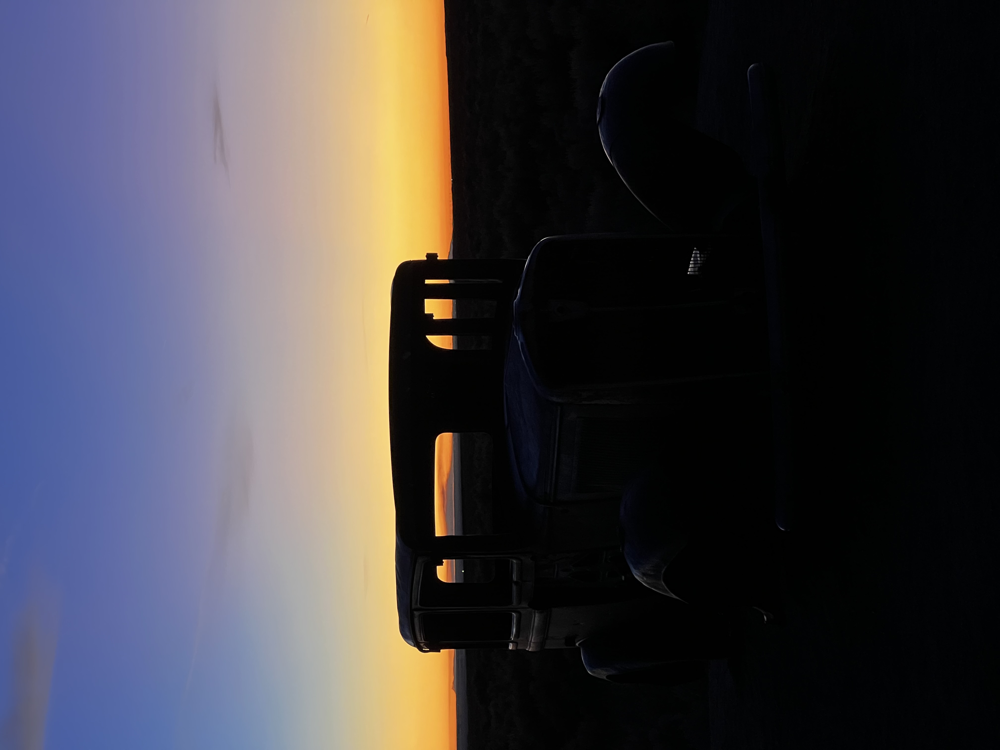
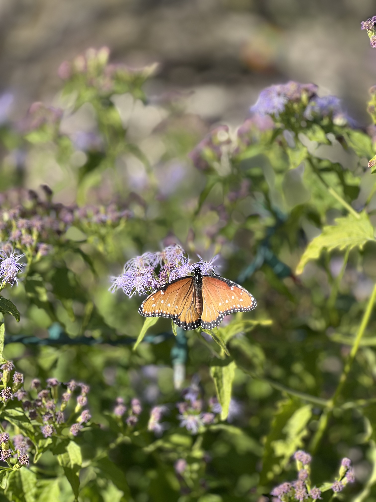
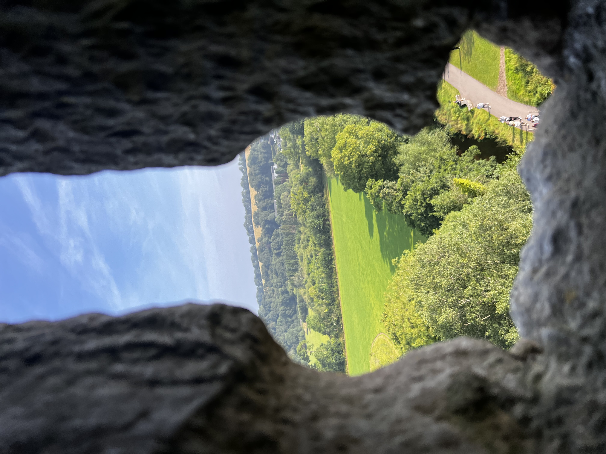
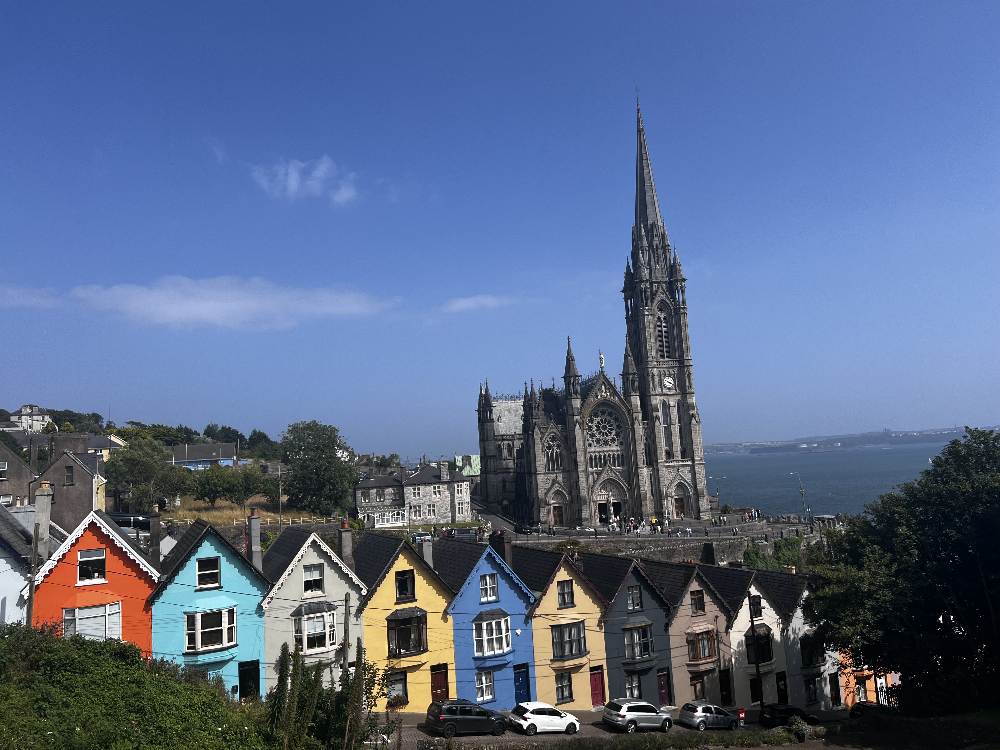
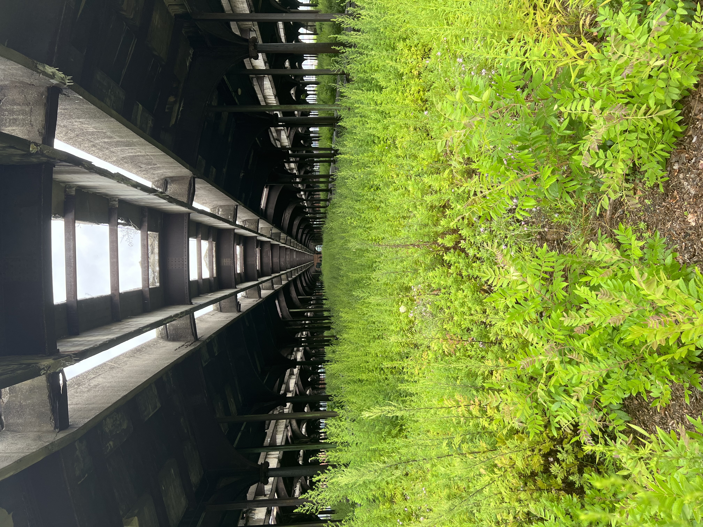
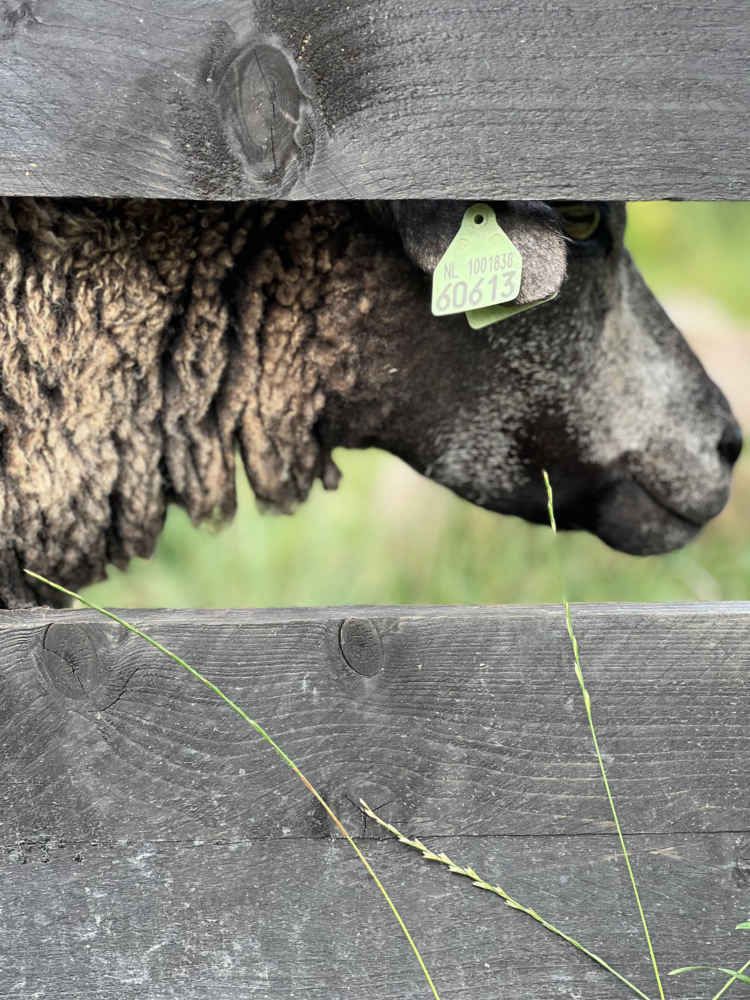

This site is about some of the cool pictures I have taken over the years. Here is one cool fact: I fell in love with photography in my freshman year of high school and it has become one of my favorite hobbies.

The first picture I took that made me fall in love with photography.

Old car silhouetted against desert sunset at Petrified Forest National Park. I took this picture January 2nd 2025.

A queen butterfly with its wings displayed on top of a flower found in Arizona.

A photo taken from inside Blarney castle in Ireland through a crack in the stone.

A photo taken in ireland with a church in the background with the colorful house called the deck of cards.

A photo I took near New York of an abandoned train station.

A close up photo of a sheep through the fence in the Netherlands.